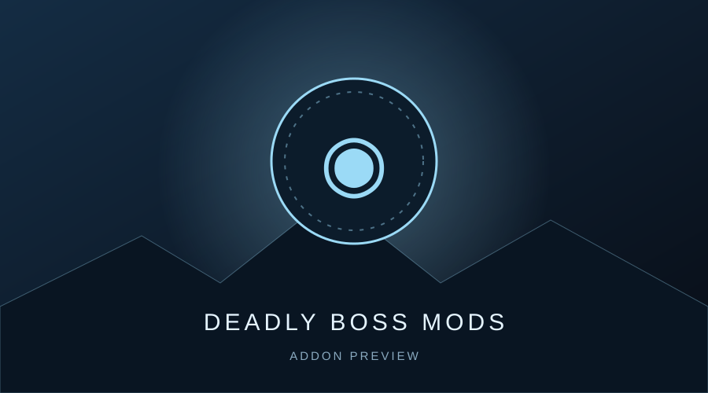

MUST HAVE
Deadly Boss Mods
Boss ability timers, warnings and encounter alerts. A core raid-awareness tool for many WotLK groups.
FIND GITHUB DOWNLOAD ↗Recommended interface tools for Wrath of the Lich King 3.3.5a.
2 starter entries · verify client compatibility before installing

Boss ability timers, warnings and encounter alerts. A core raid-awareness tool for many WotLK groups.
FIND GITHUB DOWNLOAD ↗
Damage, healing and other combat statistics for reviewing raid performance.
FIND GITHUB DOWNLOAD ↗2 starter entries · verify client compatibility before installing

Threat monitoring to help tanks and damage dealers avoid unwanted aggro.
FIND GITHUB DOWNLOAD ↗Browse dungeon and raid loot tables, sets and item sources in-game.
FIND GITHUB DOWNLOAD ↗2 starter entries · verify client compatibility before installing
Custom visual and audio alerts. Confirm the selected release supports the 3.3.5 client before installing.
FIND GITHUB DOWNLOAD ↗Mailbox quality-of-life features such as faster collection and mail handling.
FIND GITHUB DOWNLOAD ↗